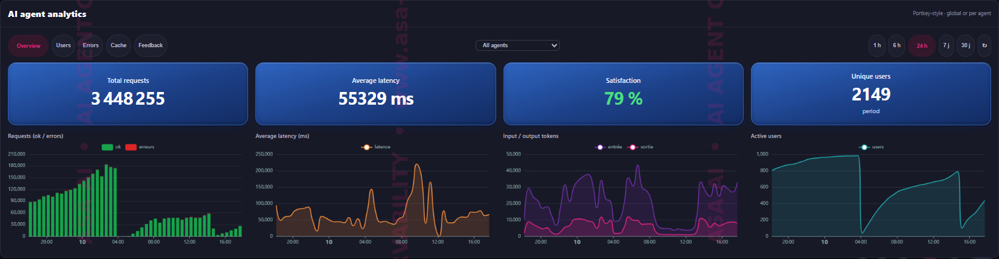
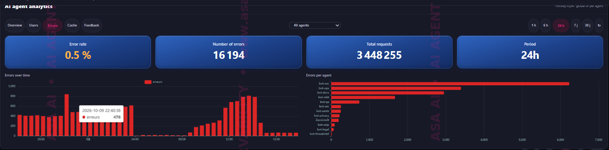
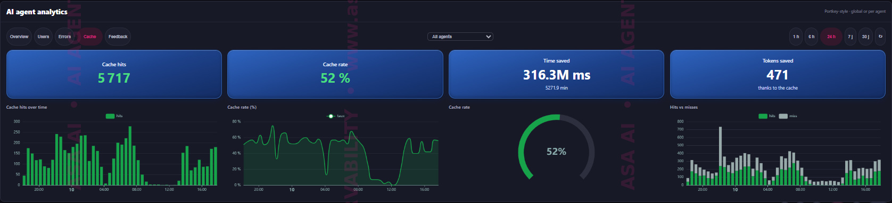
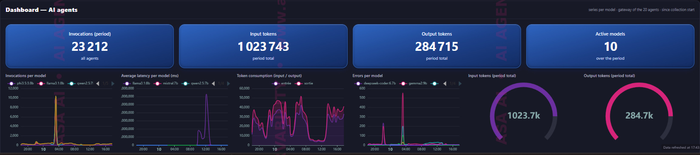

|
ASA AI · AI AGENT OBSERVABILITY
Your AI agents are talking.
Are you listening? Every call, every token, every error, every blocked prompt. One live view of everything your AI agents do, in production.
| ||||||||||||
|
Hello, AI agents are moving into production faster than teams can monitor them. Latency spikes, silent failures, runaway token costs and risky prompts usually surface when a user complains or the invoice arrives. ASA AI Agent Observability puts every AI agent under watch from day one: what it does, how fast, at what cost, how reliably and how safely. All your agents, all your models, cloud or self-hosted. | ||||||||||||
|
Observe every AI agent, at a glance
| ||||||||||||
|
A preview of the agent observability platform
 Agent analytics: requests, latency, tokens and active users
 Error tracking over time and per agent
 Cache performance and savings
 Multi-agent dashboard: invocations, latency and errors per model
The full platform is shown live during the demo. | ||||||||||||
|
See your AI agents in a new light A 30-minute live demo on real AI agents, on a use case of your choice.
Using Gmail in your browser? Request the demo via Gmail or write to us at contact@asa-ai.fr | ||||||||||||
|
ASA AI · AI agent observability, AI security and SOC automation www.asa-ai.fr · contact@asa-ai.fr |